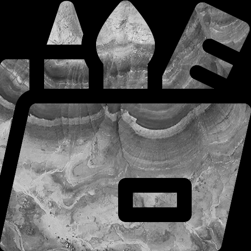
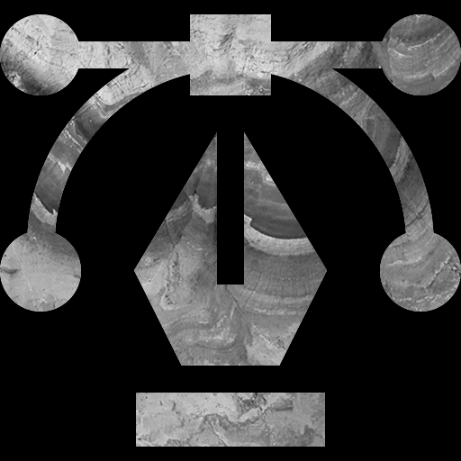
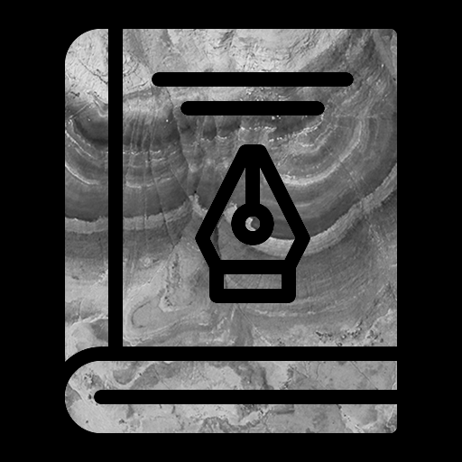
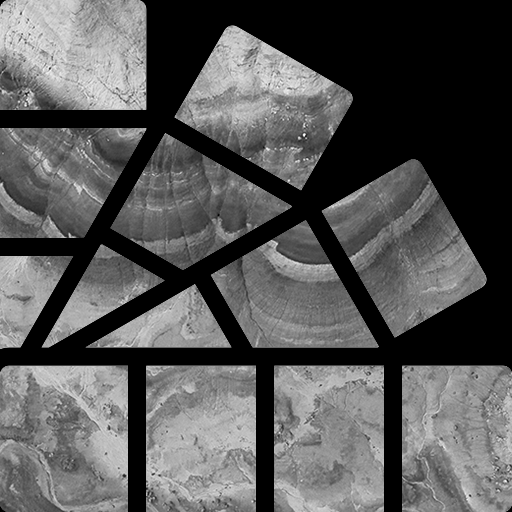
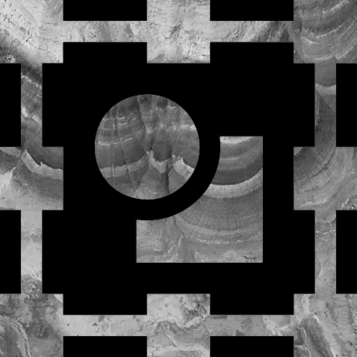
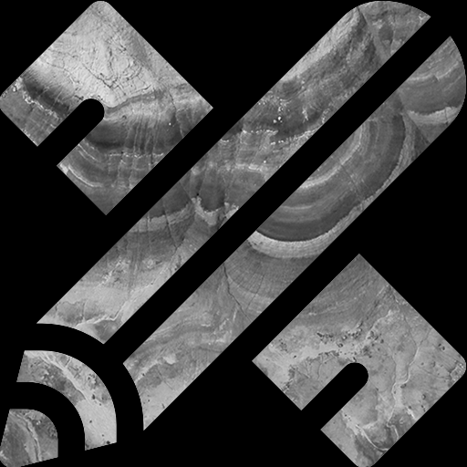
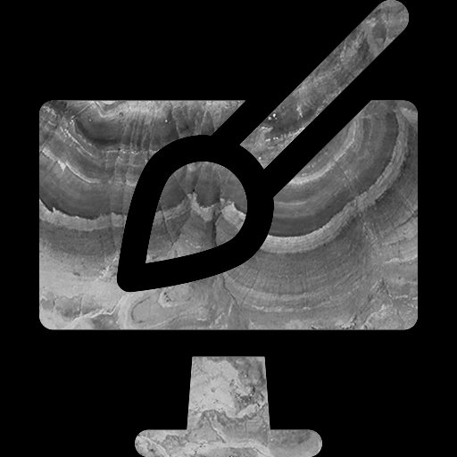
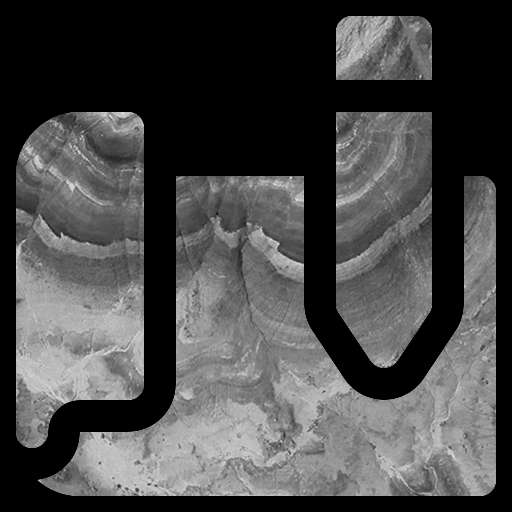

ИВАНОВСКИЙ
ГОСУДАРСТВЕННЫЙ
УНИВЕРСИТЕТ
2021 STUDENЬ
ГРАФИЧЕСКИЙ
#
СТОИТ
ОЛЬГА БЕКЕТОВА
/ 01.11.2021
ДИЗАЙН:
       1 ИЮНЯ 2021 ГОДА
Я целый день посвятила графическому дизайну – учебе и практике,
прошла много теории: в основном это был YouTube, в большинстве
своем – курс по Adobe Illustrator в виде плейлиста из 59 видео. К
слову, я даже не досмотрела его до конца и сразу перешла к
практике, в ходе которой многому обучилась самостоятельно.
И когда, если не сейчас, стоит попробовать освоить для себя онлайн-
профессию графического дизайнера, не выходя из дома, при этом
совмещая с учебой и личной жизнью?
С начала пандемии у нас была куча шансов попробовать себя в чем
угодно, но не многие ими распорядились так, как хотели. А сейчас,
казалось бы, с очередным переводом на заочку, самое время исправить
ситуацию и нагнать все то, что мы упустили. Именно для этого я пишу
данную статью, чтобы помочь читателю в этом.
ВАЖНЫЕ ИНСАЙТЫ
За тот летний день, когда я всецело окунулась в
графический дизайн, я вынесла для себя 5 очень
важных мыслей, которыми я хотела бы поделиться с
теми, кто только начинает свой путь – не важно, в чем.
Я долгое время думала о том, что мне хочется начать заниматься
дизайном, но до этого никак не доходили руки. Однако посмотрев
одно видео за завтраком я взахлеб просидела весь день и долго
не могла оторваться: как от теории, так и от практики.
Главное – начать, а дальше попрет
Научиться можно всему бесплатно, если есть желание
1
2
Есть множество платных курсов и некоторые не способны себе их
позволить, но это не должно мешать искать информацию
самостоятельно в открытых источниках, которые ничуть не хуже.
Главное отличие от курсов – не структурированность и
разрозненность материала.
Мне казалось, что у меня ничего не получится, я боялась
первой оплошности и последующего разочарования, почему
долго и не бралась за это дело, но взявшись я поняла, что мои
страхи и сомнения только мешали мне понять свои
способности в сфере графического дизайна.
Не узнаешь и не поймёшь, пока не попробуешь
3
Если теорию не подкреплять практикой, не доводить до
автоматизма действия для мышечной памяти, то «обычная»
все быстро забудет. А если практиковаться без понимания
теории, то далеко на этом не уедешь. Я пришла к этому в
первый же день, когда повторяла все, чему меня учат видео.
Теория и практика неразрывны друг от друга
5
С ЧЕГО НАЧАТЬ?
Решившись начать развиваться в этой сфере
можно запросто запутаться в том, что интересует
больше: веб-дизайн, дизайн полиграфии или
логотипов – перечислять можно бесконечно. Но
для того, чтобы решить данную проблему, в
ближайшее время проходят несколько
мероприятий, которые помогут с выбором.
На практическом вебинаре предлагают научиться
рисовать дизайн сайта, кейс флористики, получить знания
по аналитике и продуктовому дизайну. Он подойдет для
прохождения абсолютным новичкам и начинающим
дизайнерам. Вебинар пройдет 5-6 ноября в 12:00.
ВЕБИНАР “Сайт для ювелирного бренда”
МАСТЕР-КЛАСС по “Крутой работе”
В ходе мастер-класса, в котором, кстати, 80% практики, как
предупредили на сайте, предлагают вместе нарисовать
крутую работу, свой первый концепт в Figma, за 2 часа с
нуля. А также расскажут, как выйти на 100 000 рублей в
месяц, работая удаленно. Он пройдет 6 ноября в 12:00 и 19:00.
И таких бесплатных мероприятий каждый месяц проходит довольно
много, только успевай посещать. Конечно, можно записаться на
платные курсы. Если есть средства, то это просто отлично! Но не стоит
пренебрегать и таким типом обучения. «Если книга тебе ничего не
даст, ты как минимум научишься читать».
ЗАКЛЮЧЕНИЕ
Графический дизайн не раз пригодился мне в жизни: до
того, как я основательно начала этим заниматься, и,
соответственно, после. Ведь он повсюду и это
неоспоримо, а это значит, что в такой широкой сфере
можно при желании занять свое место. А в период
карантина этим можно заняться наиболее продуктивно.
Благодаря тому, что тогда, летом, я нашла время на то,
чтобы обучиться чему-то новому, создание данного сайта
в Figma далось мне достаточно легче, чем могло бы быть.
Я не жалею о потраченном времени и продолжаю
развиваться. А мои работы можно посмотреть на
@meadowndelion в Инстаграме.
Почему я решила попробовать это в начале лета?
Потому что именно тогда появилась куча
свободного времени, которого так не хватало во
время очной учебы в университете. К слову, эта
статья актуальна и сейчас, когда по всему миру
бушует пандемия и учебные заведения массово
переводят учащихся на дистант, а свободного
времени, так или иначе, становится больше.
Каждый был новичком в своей сфере
4
Также я была уверена в том, что не смогу достичь уровня
профессионалов в дизайне, которых я только знаю и не знаю.
Однако важно понимать, что все эти люди прошли путь, который
как минимум в несколько раз больше моего, относительно того,
когда я находилась в самом начале.
ВЕБИНАР “Креативная презентация без дизайнера”
На нем разберут вредные советы по дизайну
презентаций и тренды, которые стоит учитывать при
создании. Также проведут розыгрыш крутых подарков
и практику, в ходе которой переделают ужасный
слайд в шедевр. Он пройдет 9 ноября в 20:00
ИВАНОВСКИЙ
ГОСУДАРСТВЕННЫЙ
УНИВЕРСИТЕТ
2021 STUDENЬ
ОЛЬГА БЕКЕТОВА
/ 01.11.2021
ИЗОБРАЖЕНИЯ: